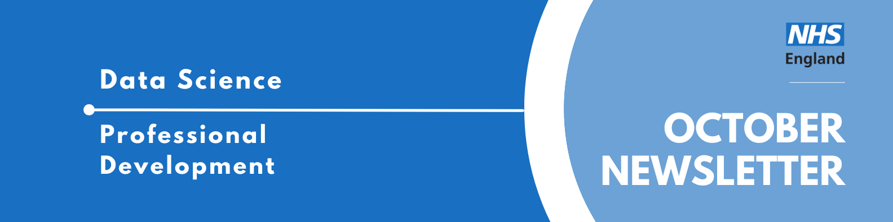

Data Science Community for Health and Care Newsletter October 2024

Welcome to the latest newsletter from the Data Science Community for Health and Care, brought to you by the NHS England Data Science Professional Development Functional Team.
The newsletter team are always happy to receive constructive feedback, and we invite you to send us any contributions you may have.
If you cannot access something of interest to you, please reach out.
Thanks for reading! – newsletter team
Check out our website!
Over the past few months the team behind this newsletter have been busy redesigning and revamping our site on the FutureNHS platform, and it’s finally ready to share!
This is where you can find any and all of our resources, past event recordings and calendar of upcoming events! You will need a (free) FutureNHS account in order to access it.
Don’t have an account? Just follow the link to the site and complete the “create an account” instructions.
Any requests? Comments are enabled on the site, simply scroll to the bottom and let us know what you think!
Events
Lots of exciting things coming up! See the full calendar here, and a small selection below.
BOLD Innovation Showcase
Wednesday 6th November 2024, 9:30-16:30, London
Welcome to the BOLD Innovation Showcase! Join us at the De Vere Grand Connaught Rooms for a day filled with groundbreaking ideas and cutting-edge technologies. This in-person event is your chance to connect with industry leaders, innovators, and visionaries. Get ready to be inspired, network with like-minded individuals, and discover the future of innovation. Don’t miss out on this exciting opportunity to be a part of something truly special. See you there!
Making health data resources discoverable through the Health Data Research Gateway
Tuesday 12th November, 13:30-14:30, Online
The Health Data Research Gateway (the Gateway) is a central location to discover health data and other resources vital for research. To date, more than 850 descriptions of datasets (metadata) from 70+ data custodians have been uploaded to the Gateway, along with 2500+ registered users and over 1000 data uses added to the Gateway data use register.
Throughout the last year, the HDR UK Technology Team has been working on a major new version of the platform. This presentation will outline how the Gateway’s new functionality will help users discover, explore and access health and health-related data, software and research analysis, publications, diseases, phenotypes and other shareable resources.
NHS RPySOC 2024 Conference
Thursday 21st-22nd November, 9am-5pm, in-person (Birmingham) / Online
The NHS RPySOC 2024 conference is open for registration now! It will be on 21st & 22nd November in Birmingham. This is jointly hosted by the NHS R Community and NHS.pycom, and also promotes Open Source.
- Day 1 will be a mixture of presentations, workshops and lightening talks
- Day 2 will be ‘Unconference’ with suggestions for topics being taken on day 1.
It’s a great chance to show off our work, share our learning with a like minded community and learn a few things yourself, such as the state of the industry and how techniques are being applied elsewhere.
You can either attend:
- In-Person (The ICC, Hall 11, Birmingham B1 2EA (Sold Out: Waiting List Only)
- Online
See more future events on the calendar
Know of any events we should feature next month? Let us know by clicking the “Contribute” button, or here.
Data Science Discussion: Professional Development Edition
Last month we ran another Data Science Discussion, an event where we have a host prepare a topic for discussion and then we split into breakout rooms to allow more people to have their say. These discussions aren’t recorded, we want to make everyone feel as comfortable as possible to discuss their thoughts and ideas on whatever topic we are talking about.
Most recently our discussion focussed on professional development in our current roles, and how we can support others to take advantage of the opportunities they have.
One discussion point that came up in a few groups was the difference between purposeful development time versus just doing the job and where the line is drawn between them. It was felt that a lot of the work we do involves researching and learning about different techniques and methods, and that this could really also be considered professional development.
A theme that also came up across groups was the lack of time available for dedicated professional development for topics and areas that are separate from the day to day work. A lot of people felt like they had limited time for self-directed study, and that getting the job done took priority which led to professional development taking a back seat. In order to mitigate this, people suggested blocking out calendar time in advance in order to pre-book learning time, although sticking to this can be hard if you’re busy.
We had members from various NHS teams present at this discussion and there was also a definite split, with some teams feeling like they were allowed a lot more time and were encouraged to take development opportunities more than others. This highlighted a bit of a difference in team culture, and there was discussion about how those who are allotted more time could support those without.
The most engaging discussion point? Whether a hot dog is a sandwich. We’re still split on it.
Want to get the calendar invite for the next one? Sign up to our mailing list.
Want to host a Discussion? Contact us and let us know!
Competitions and Challenges
British Heart Foundation Kaggle Competition
Got a competitive edge but a heart of gold?
The British Heart Foundation Data Science Centre have set up a Kaggle competition, in collaboration with researchers from the ition on Kaggle The University of Edinburgh. The challenge aims to assess whether artificial intelligence/machine learning can be used to identify and classify disorders of heart rhythm from synthetic ECG images which have been created to incorporate common artefacts.
The top scoring teams will be invited to participate in a British Heart Foundation Data Science Centre webinar about the challenge and the best performing will be invited to present their results at the British Cardiovascular Society (BCS) meeting in June 2025. Participation in these activities will require code sharing.
Find out more information and how to enter here. This competition is currently open and runs until Monday 16th of December 2024.
Gandalf Game
Test your LLM prompt skills by tricking Gandalf into revealing the secret password for each level. Each level gets progressively harder, with Gandalf first just giving the password to anyone that asks and later more creative approaches are needed.
Played before? There’s new adventures! Try Reverse Gandalf, where you tell Gandalf how to defend against password seeking users.
You can check it out here: Gandalf Wizard AI
AI vs Human: Who wrote it best?
Can you tell when something has been written by a machine? Can you write like a machine?
Check out GPTZero, a free online AI checker which estimates its confidence that the text you input is or isn’t AI generated. Think you can fool it? Try writing a short paragraph in the style of ChatGPT, and see if you can get it to think what you’ve written was really written by an LLM. Or flip the script: give your favourite LLM prompts to see if it can produce text that passes as human.
Was this text written by AI? Test it out!
Check out our collection of training resources in the Resources Section! Can you spot something missing? Contact us!